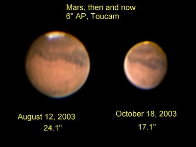
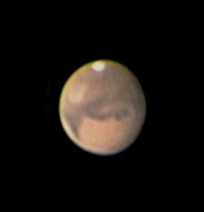
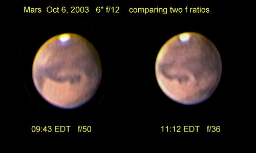
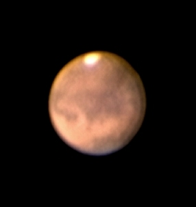
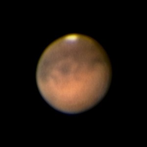
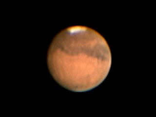

The most recent images are at the top. Please send me your comments.
The images can be used for educational purposes as long as credit is provided.
Copyright Rolf Meier
Ottawa, Ontario, Canada
Unless otherwise noted, images are stacked using Registax3, wavelet processing is applied, and final adjustments are made using Paint Shop Pro and SGBNR. Some of the images have been re-sized by re-sampling at various stages of processing.
October 19, 2003 00:06 UT

6-inch Astrophysics Super Planetary Refractor at f/36; Toucam Pro
An image to show the difference in apparent size compared to earlier in the summer.
October 11, 2003 03:32 UT

6-inch Astrophysics Super Planetary Refractor at f/36; Toucam Pro
Seeing fair.
October 6, 2003

6-inch Astrophysics Super Planetary Refractor at f/50 and f/36; Toucam Pro
Seeing fair. Two images to compare 2 different f/ratios, resized to the same scale.
October 3, 2003 02:08 UT

6-inch Astrophysics Super Planetary Refractor at f/36; Toucam Pro. Processed with Astrostack for a change.
Seeing poor.
September 26, 2003 02:30 UT

6-inch Astrophysics Super Planetary Refractor at f/36; Toucam Pro.
Seeing poor.
August 13, 2003 05:30 UT

6-inch Astrophysics Super Planetary Refractor at f/36; Toucam Pro.
Seeing fair. A series of images was taken tonight at 10-minute intervals to produce this animation of Mars' rotation. Notice how the seeing changes, resulting in frames of varying quality. The feature Olympus Mons can be seen just leaving the face of the planet in the last frame.
{kind=link}